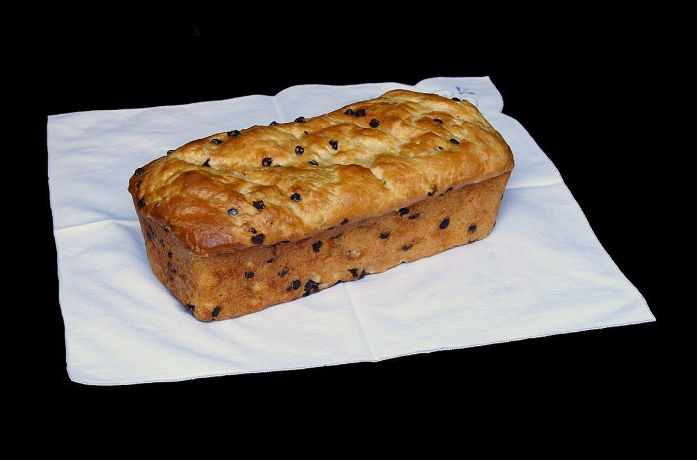

制作側の連想
折りたたみ自転車の部位を、配置図にしてみる
このサイトは、ふたつに折れる小さな自転車を図にしたつもりで作りました。六つの部位に番号をふり、上の図と並べています。制作側の連想で、お店の理念・由来とは無関係です。実際の自転車の仕様を示すものでもありません。
凡例
六つの部位
- 1ハンドルポストハンドルを支える支柱。たたむときに倒したり縮めたりする部分。
- 2フレームヒンジ車体の中ほどにある蝶番。ここを軸に、前と後ろが二つに折れる。
- 3サドル座る部分。支柱を上げ下げして高さを変える。
- 4ペダル足をのせる部分。たたんだときに出っぱらないよう、内側へ折れるものがある。
- 5小径ホイール小さめの車輪。小さいぶん、たたんだ姿もコンパクトにまとまる。
- 6クランプレバー支柱をはさんで固定する留め具。ゆるめて高さを変え、締めて固定する。


ご案内
お店のこと(確認できたものだけ)
| 所在地 | 〒710-1101 岡山県倉敷市茶屋町504-1 |
|---|---|
| 電話 | 準備中 |
| 営業時間 | 準備中 |
| 定休日 | 準備中 |
| ご予約 | 準備中 |
| 駐車場 | 準備中 |
| SNS | Instagram @narsbakery |
写真はパンとコーヒーのイメージです。お店のものではなく、お店で提供している商品を示すものでもありません。

